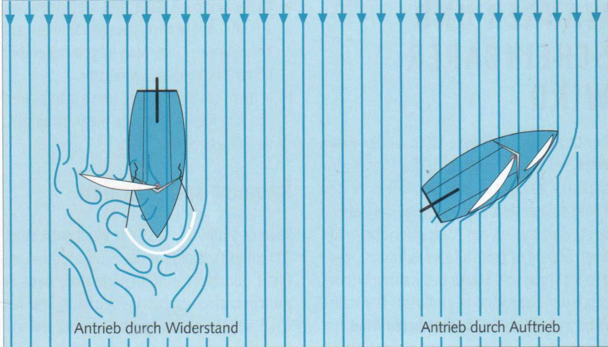
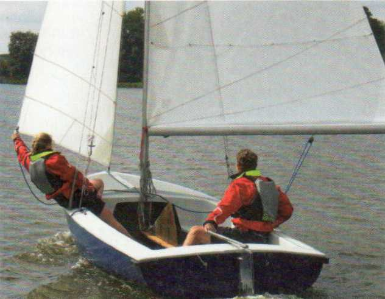
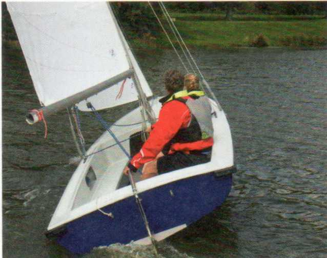
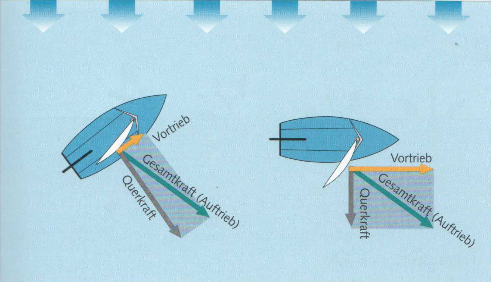
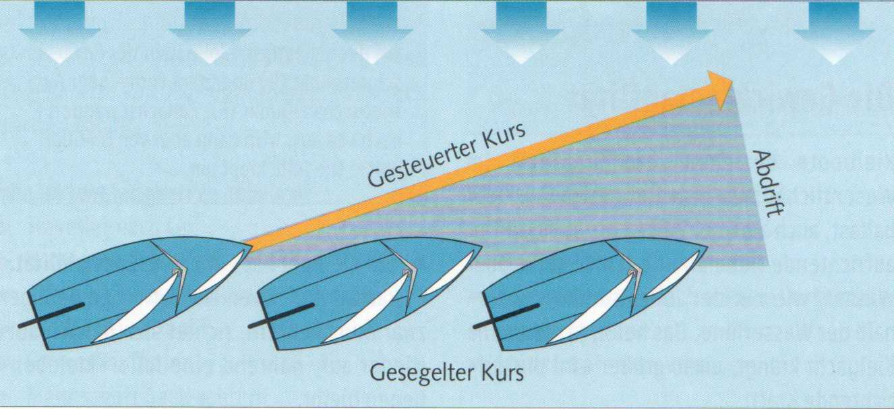

Dass Rückenwind schiebt, ist eine bekannte Tatsache. Nach diesem Prinzip segelt ein Boot vor dem Wind und auch teilweise auf Raumschots-Kurs. Die Segel setzen dem Wind einen Widerstand entgegen. Die Luftströmung wird abgebremst und unterbrochen. Je größer die Widerstandsfläche ist, umso mehr Luftmasse wird abgebremst und umso größer ist der Schub. Am meisten Schub, der gleichbedeutend mit Vortrieb ist, bewirkt eine hohle Halbkugel. Deshalb sind auch spezielle Vorm-Wind-Segel, die Spinnaker, annähernd halbkugelförmig geschnitten. ► Je bauchiger die Segel geschnitten, beziehungsweise getrimmt sind, umso wirksamer sind sie auf Kursen, auf denen Vortrieb durch Widerstand erzeugt wird.

Auf andere Art entsteht der Vortrieb beim Segeln im Am-Wind-Bereich. Nicht mehr ein bauchiges Segel erzeugt Widerstand, sondern ein flaches, als aerodynamisches Profil geschnittenes Segel bewirkt eine störungsfreie Ablenkung des Windes. Die Luftströmung wird dabei gleichzeitig in Luv verzögert und in Lee beschleunigt.
Dabei entsteht ein Überdruck in Luv und durch die Beschleunigung der Luftströmung ein erheblich größerer Unterdrück in Lee. Beide Kräfte wirken als Gesamtkraft in die gleiche Richtung, fast senkrecht zur Richtung des einfallenden Windes.
Das Segel arbeitet nach demselben Prinzip wie die Tragfläche eines Flugzeuges. Aus der Aerodynamik stammt denn auch die Bezeichnung »Auftrieb«, der nicht mit Vortrieb gleichzusetzen ist. Der Wind liefert dem Boot überhaupt keinen nach vorn gerichteten Vortrieb, sondern nur einen quer zur Windrichtung orientierten Auftrieb. Erst das Boot selbst, sein aus Schwert oder Kiel und Unterwasserschiff gebildeter Lateralwiderstand verwandeln ein Teil der quer gerichteten Gesamtkraft des Auftriebs in Vortrieb. Das heißt in Fahrt voraus.

Segeln vorm Wind - Antrieb durch Widerstand.

Segeln am Wind - Antrieb durch Auftrieb.
Zerlegt man die vom Wind auf das Boot gerichtete Gesamtkraft mit einem Kräfteparallelogramm in Querkraft und Vortrieb, wird deutlich, wie gering der gewonnene Vortrieb ist. Dass es ihn überhaupt gibt, bewirkt der Lateralplan. Er stellt sich mit seinem großen seitlichen Widerstand im Wasser der Querkomponente der Gesamtkraft entgegen, nützt aber die voraus gerichtete Komponente umso besser aus. Denn in Vorausrichtung ist der Widerstand minimal. Die Querkraft bewirkt die Krängung des Bootes und die seitliche Abdrift.
► Am Wind ist das Verhältnis von Vortrieb zu Querkraft am ungünstigsten. Die meiste Windenergie wird in Krängung und Abdrift umgesetzt.
► Auf raumeren Kursen nimmt der Anteil der Querkraft und damit Krängung und Abdrift ab, während der Vortrieb entsprechend wächst. Deshalb segelt man raumschots am schnellsten.

Denkt man an die Flugzeugtragfläche, wird deutlich, wie wichtig der richtige Anstellwin-• e' des Segels auf Am-Wind-Kursen ist. Der optimale Anstellwinkel ist erreicht, wenn das Segel im unteren Drittel am Vorliek gerade noch nicht killt, das heißt zu flattern beginnt. ► Großsegel zu dicht geholt: Die Luftströmung in Lee reißt ab. Es kommt zu Verwirbelungen, das Druckgefälle zwischen Luv- und Leeseite baut sich ab, das Boot läuft nicht mehr.
► Großsegel zu weit gefiert: Es steht weitgehend parallel zur Luftströmung. Es entsteht kaum oder gar kein Druckgefälle zwischen Luv und Lee und somit kein Auftrieb, der in Vortrieb umgesetzt werden kann. Der Wind streicht wirkungslos an der Segelfläche vorbei.
Ähnlich liegen die Dinge auch beim Zusammenspiel von Vor- und Großsegel. Kann die Luft zwischen beiden Segeln ungestört hindurchstreichen, wird sie durch den sogenannten Düseneffekt beschleunigt.
Der Unterdrück in Lee des Großsegels wird dadurch erhöht und der Auftrieb und damit Vortrieb verstärkt.
► Vorsegel zu dicht: Die Luftströmung reißt ab, der Abwind des Vorsegels wird gegen das Großsegel gelenkt und wirkt bremsend.
Der Querkraft wirkt der Lateralwiderstand unter Wasser entgegen. Je länger und tiefer diese Lateralfläche ist, umso wirksamer. Doch sie kann auf Am-Wind-Kursen nicht verhindern, dass das Boot unter dem Winddruck auf das Segel stets etwas in Querrichtung ausweicht. Dieser Winkel zwischen dem gesteuerten und dem tatsächlich gesegelten Kurs ist die Windversetzung.
► Auf Am-Wind-Kursen muss mehr nach Luv gehalten werden, alsderdirekte Kurs zum Ziel erfordern würde. Auf Vorm-Wind-Kurs kann eine schwache Abdrift durch ungleiche Verteilung der Vortriebskräfte rechts und links vom Mast entstehen.
